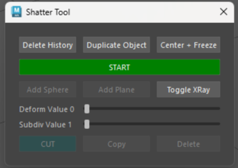

Shatter Tool
Info
- This tool was created for a group project, we wanted to make low poly buildings shatter on impact when needed. The problem was asking the designers to one by one create a shattered version of each building was time consuming so I offered this tool to speed up the process.
- The first 3 top buttons are for convenience, to prepare the asset quickly.After clicking "Start" you can start adding planes and spheres where you want the cuts to open, to avoid resizing each time you can copy planes or spheres as needed. The Xray vision can help see better. When you placed enough planes and/or spheres you can select them in the timeline and move the sliders to give them more subdivision and deform them further, thanks to deformation it will look more natural when cut. Finaly select all your shapes and press "cut" so the asset gets cut with the planes and spheres.

The code
Uses PythonQt to make the UI, each time a plane or sphere is created it is added in an array that keeps track of all the shapes. The delete button checks the array for a corresponding shape and removes it if find. The cut button uses boolean to subtract the array from the asset we want to cut.You can find the source code on my GitHub